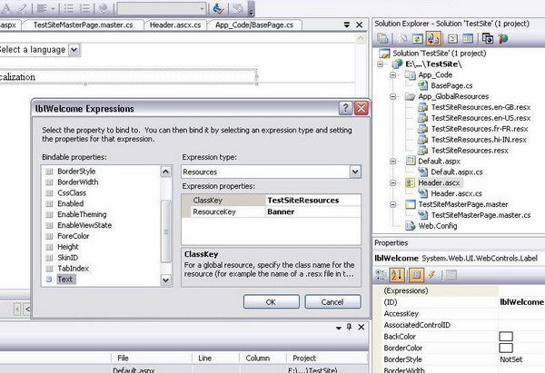

An important point to note while globalizing your ASP.NET 2.0 web applications is regarding dynamic updation of the .resx files once published on the remote server. We would like to have this flexibility so that the users themselves can modify values in the resource files (which are simple XML files following Microsoft ResX Schema) once the application is deployed on a server without re-compiling the entire application itself. The ability to do so depends on what project model we have followed for our web application in VS 2005.
If we are using the WebSite Project model (which is default in VS 2005) then resource files only under the App_LocalResources will get published as raw .resx files on the server as these are not compiled. These resource files can be edited on the server (as they are compiled during runtime). Files under the App_GlobalResources folder are compiled into individual resource specific dlls and published on the server, so you cannot edit the resource files which are under App_GlobalResources once they have been published using the WebSite project model. If you need to add new locale resources then you need to first manually generate the new .resources file using the tool resgen.exe and then compile it to a satellite assembly using Assembly Linker tool.
If we are using a Web Application Project (WAP) model, then files both under the App_GlobalResources as well as App_LocalResources folders will get published as raw .resx files which are editable. So I think that using WAP gives you this slight flexibility which the default WebSite model does not provide.
Note that whenever we change any file under the /bin folder of the deployed web application, an application restart will occur, which may cause loss of data (like values stored in Session etc).
This works when we have Global resource
files. Here we use Expressions
to set the values from the resource files as:
<asp:Label id=lblWelcome Text="<%$Resources:TestSiteResources, Welcome %>" runat="server"></asp:Label>
We can set this using the VS IDE. Select the label control, go to
Properties
window, select Expressions->Text. Then choose
Resources
from the drop down and enter the class name (TestSiteResources for
this example) and the Resource key (Banner). This is the recommended
way to localize the UI controls on a page.
